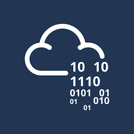
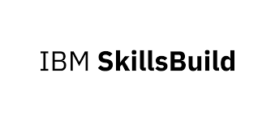
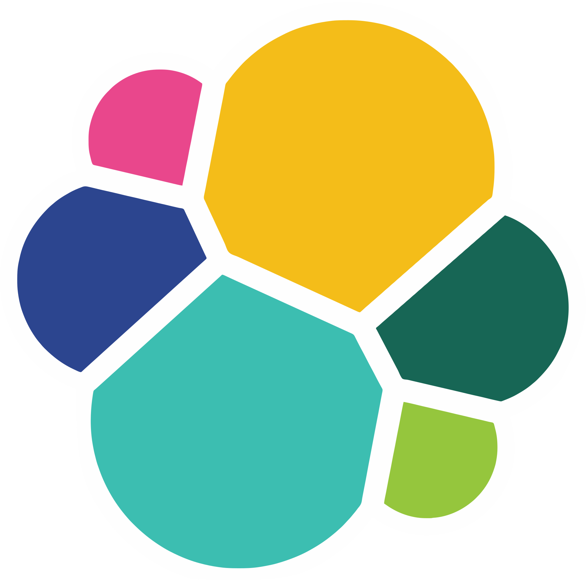
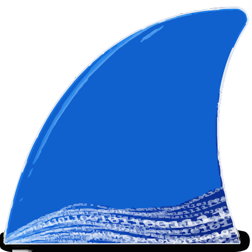
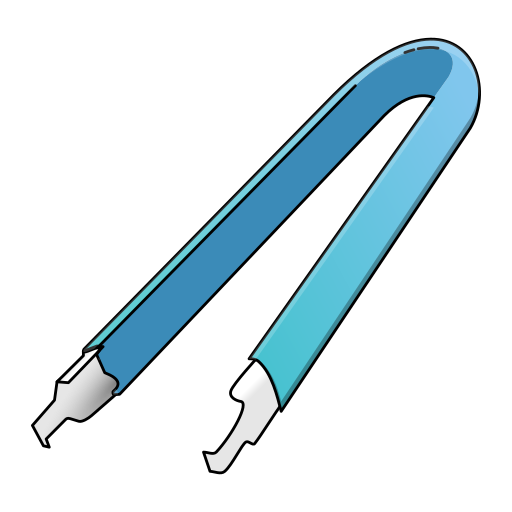

Cybersecurity
SIEM
Cowrie Honeypot with Wazuh Monitoring
Built a honeypot lab to capture SSH attacks, attacker commands, brute-force attempts, and SIEM-relevant telemetry.
Hi Everyone!
SOC Analyst Aspirant | Cybersecurity Student | Blue-Team Learner | GRC Enthusiast
Motivated MSc Applied Cybersecurity student seeking an internship or entry-level SOC Analyst L1 role. Hands-on experience in Linux environments, log analysis, Wazuh, Wireshark, Cowrie honeypot, threat intelligence, and attack simulation. Currently pursuing TryHackMe Security Analyst Level 1 training with exposure to SIEM concepts, Splunk-based alert triage, incident investigation, phishing analysis, and escalation workflows. Strong interest in security monitoring, incident response, and SOC operations.
Explore my cybersecurity labs, software projects, cryptography work, and hands-on technical builds that reflect my learning and career direction.
Built a honeypot lab to capture SSH attacks, attacker commands, brute-force attempts, and SIEM-relevant telemetry.
Practiced alert investigation, suspicious login review, phishing indicators, and escalation-oriented SOC workflows using Splunk-style analysis.
A lightweight Python-based scanner that demonstrates networking fundamentals, port visibility, and basic host discovery concepts.
Implemented the classical Merkle-Hellman public-key cryptosystem to explore encryption, key generation, and decryption logic.
A desktop-oriented document management application demonstrating Python GUI work, that uses a json data file to analyse statistics.
A Windows desktop browser project built in C#, including bookmarks, browser history, and interface components.
A Java-based inventory management application for auction house collectibles, supporting CSV file handling, item editing, sorting, reporting, error handling, and testing.
Developed a hospital management application that demonstrates CRUD operations, to assist with patient registration, ward management, admissions, and to keep track of doctor notes.
Completed certifications across SOC operations, cybersecurity fundamentals, data analytics, and connected systems.


Practical blue-team fundamentals focused on alert review, log investigation, detection thinking, and incident escalation.
Hands-on exposure to monitoring, packet analysis, honeypot telemetry, web security testing, scanning, and security lab environments.

Elastic Snort
Wireshark Cowrie Nmap
Nmap
 Burp Suite
Burp Suite
Experience in various programming languages and operating systems through projects and labwork.
 Java
Java
 Python
Python
 Node.js
Node.js
 C
C
 C#
C#
 Bash
SQL
Bash
SQL
 Linux
Linux
 Windows
Windows
Digital forensics and incident response practice across memory analysis, disk investigation, evidence indexing, and artifact extraction.
 Autopsy
IPED
Autopsy
IPED

Bulk-Extractor